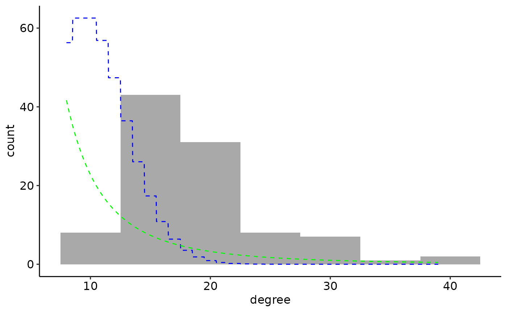
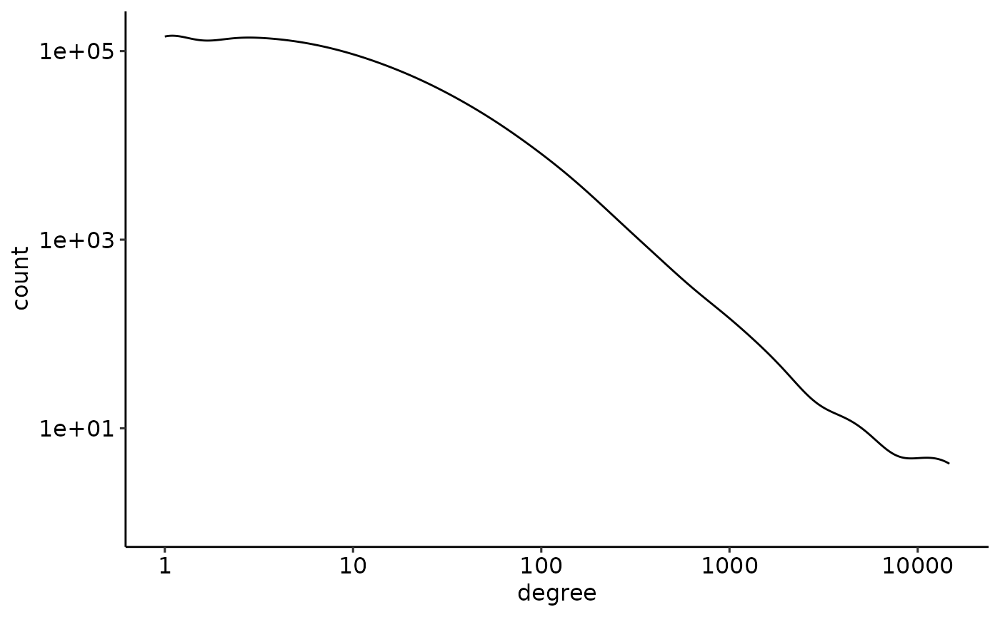

Loading the NEXTNetR package
We start with loading the NEXTNetR package. If the package is not already installed, see the website for installation instructions. We also load the ggplot2 and ggpubr packages for plotting and set a nice theme.
Defining networks
To create arbitrary, user-defined networks defined by adjacency
lists, NEXTNetR provides
adjacencylist_network() and
adjacencylist_weightednetwork(). We first use
adjacencylist_network() to create an undirected network in
which nodes 1, 2, 3, 4 form a clique (i.e. each node is linked to all
others) but node 5 is linked only to nodes 1 and 2 and node 6 only to
nodes 3 and 4.
nw <- adjacencylist_network(list(
c(2, 3, 4, 5), # neighbours of node 1
c(1, 3, 4, 5), # neighbours of node 2
c(1, 2, 4, 6), # neighbours of node 3
c(1, 2, 3, 6), # neighbours of node 4
c(1, 2), # neighbours of node 5
c(3, 4) # neighbours of node 6
), is_undirected=TRUE, above_diagonal=FALSE)Note that since our network is undirected, the adjacency list we
specified is redundant – since the network is undirected, a link from
node \(i\) to \(j\) necessarily entails a link from \(j\) back to \(i\). Setting
above_diagonal=FALSE signalled to
adjacencylist_network() that we explicitly list these
redundant links. The same network can be define more succintly by only
explicitly listing links from node \(i\) to \(j\) if \(i \leq
j\), and leaving it to adjacencylist_network() to
add the reverse links, linke so:
nw2 <- adjacencylist_network(list(
c(2, 3, 4, 5),
c(3, 4, 5),
c(4, 6),
c(6),
c(),
c()
), is_undirected=TRUE)To confirm that the implicitly defined links were indeed added, we check the neighbours of node 4
print(network_neighbour(nw, 4, 1:network_outdegree(nw, 4)))
#> [1] 1 2 3 6
print(network_neighbour(nw2, 4, 1:network_outdegree(nw2, 4)))
#> [1] 1 2 3 6and see that both networks list nodes 1, 2, 3 and 6 as expected as
neighbours of node 4. We can also query the full adjacency lists of
these networks with network_adjacencylist()
print(network_adjacencylist(nw))
#> [[1]]
#> [1] 2 3 4 5
#>
#> [[2]]
#> [1] 3 4 5
#>
#> [[3]]
#> [1] 4 6
#>
#> [[4]]
#> [1] 6
#>
#> [[5]]
#> integer(0)
#>
#> [[6]]
#> integer(0)Note that network_adjacencylist() by default also omit
redundant links in the case of undirected networks, i.e. skips links
from node \(i\) to \(j\) if \(i >
j\). To include all neighbours for all nodes, set
above_diagonal=FALSE.
network_adjacencylist() works for all networks, no
matter how they were originally defined. We can thus use this function
to query the adjacency list of synthetic networks, for example for an
Erdős–Rényi network
print(network_adjacencylist(erdos_renyi_network(5, 2.5), above_diagonal=FALSE))
#> [[1]]
#> [1] 2 3 5
#>
#> [[2]]
#> [1] 1 4 5
#>
#> [[3]]
#> [1] 1 4
#>
#> [[4]]
#> [1] 2 3
#>
#> [[5]]
#> [1] 1 2This makes it possible to modify synthetic networks. For example, we can merge an Erdős–Rényi with a Barabási–Albert network
N <- 100
k <- 10
m <- 5
al_er <- network_adjacencylist(erdos_renyi_network(N, k))
al_ba <- network_adjacencylist(barabasialbert_network(N, m))
al_merged <- mapply(FUN=function(x, y) unique(c(x,y)), al_er, al_ba)
nw_merged <- adjacencylist_network(al_merged)The resulting degree distribution is neither that of an Erdős–Rényi network (blue) nor that of a Barabási–Albert (green)
ggplot(data.frame(degree=network_outdegree(nw_merged, 1:N))) +
geom_histogram(aes(x=degree, y=after_stat(count)),
binwidth=5, fill='darkgrey', color=NA) +
geom_function(fun=function(n) 5 * N * dpois(round(n), k),
n=1000, color='blue', linetype="dashed", linewidth=0.5) +
geom_function(fun=function(n) 5 * N * 2*m*(m+1)/(n*(n+1)*(n+2)),
n=1000, color='green', linetype="dashed", linewidth=0.5) 
Weighted networks
To define a weighted network, the adjacency list must contain a list
of weights for every list of neighbours. Instead of a list of vectors,
we therefore now pass a list of lists to
adjacencylist_weightednetwork(), which each contain two
vectors names n for the neighbours and w for
the weights.
wnw <- adjacencylist_weightednetwork(list(
list(n=c(2, 3, 4, 5), w=c(1.5, 2, 2.5, 3)),
list(n=c(3, 4, 5), w=c(2.5, 3, 3.5)),
list(n=c(4, 6), w=c(3.5, 4.5)),
list(n=c(6), w=c(5)),
list(n=c(), w=c()),
list(n=c(), w=c())
), is_undirected=TRUE)We can now query not only the neighbours of node 4, but also the weights of the corresponding links
print(network_neighbour_weight(wnw, 4, 1:network_outdegree(wnw, 4)))
#> $n
#> [1] 1 2 3 6
#>
#> $w
#> [1] 2.5 3.0 3.5 5.0To query the adjacencylist of weighted networks (no matter how they
were created), we can use
weighted_network_adjacencylist()
print(weighted_network_adjacencylist(wnw))
#> [[1]]
#> [[1]]$n
#> [1] 2 3 4 5
#>
#> [[1]]$w
#> [1] 1.5 2.0 2.5 3.0
#>
#>
#> [[2]]
#> [[2]]$n
#> [1] 3 4 5
#>
#> [[2]]$w
#> [1] 2.5 3.0 3.5
#>
#>
#> [[3]]
#> [[3]]$n
#> [1] 4 6
#>
#> [[3]]$w
#> [1] 3.5 4.5
#>
#>
#> [[4]]
#> [[4]]$n
#> [1] 6
#>
#> [[4]]$w
#> [1] 5
#>
#>
#> [[5]]
#> [[5]]$n
#> integer(0)
#>
#> [[5]]$w
#> numeric(0)
#>
#>
#> [[6]]
#> [[6]]$n
#> integer(0)
#>
#> [[6]]$w
#> numeric(0)Loading networks from files
The functions empirical_network() and
empirical_weightednetwork() allow networks to be read from
files. For unweighted networks, file have the following format
# network.nw
# Files may contains comment lines beginning with '#',
# and an optional header line beginning with non-numeric text
node neighbours ....
# After the optional header, each line starts with a node and lists its
# neighbours, separated by whitespace. The following line thus adds
# links 1 -> 2, 1 -> 3, 1 -> 4, 1-> 5. For undirected networks,
# the reversed edges are added as well.
1 2 3 4 5
# The neighbours of a single node can be split over multiple, possibly
# non-consecutive lines. Here, we add 2 -> 4 and 2 -> 3, 2 -> 5.
2 4
2 3 5
3 4 5
4 6
# Nodes may be skipped, the largest node index defines the network size
6and are read with
nw3 <- empirical_network(path="network.nw")This yields the same network as nw and nw2
defined above. The separator is whitespace by default but can be changed
to something else, see help(empirical_network). If
gzip is installed, gzip-compressed files with extension
.gz are supported and piped through gzip to
read them.
Weighted networks are supported by
empirical_weightednetwork, and have the format
# weighted_network.nw
# Comment and header work like for unweighted networks
# Weightes are specified after each neighbour, separated by a colon (:)
1 2:1.5 3:2 4:2.5 5:3
2 3:2.5 4:3 5:3.5
3 4:3.5 6:4.5
# Weights are summed over all occurences of a specific link
4 6:3
6 4:2
6To read this file, which defines the same weighted network as
wnw above, we do
wnw3 <- empirical_weightednetwork(path="weighted_network.nw")Again, gzip-compressed files are supported if gzip is
installed, and the separators between neighbour-weight pairs and between
neighbours and weights can be specified, see
help(empirical_weightednetwork). Note that in the example
above, link \((4,6)\) now weight \(5\) since the weights of the two
occurrences of that link are summed
network_neighbour_weight(wnw3, 4, 4)
#> $n
#> [1] 1
#>
#> $w
#> [1] 2.5Packaged empirical networks
empirical_network() can download packaged networks
directly from the NEXTNet-EmpiricalNetworks
repository, which contains a selection of empirical networks from the
SNAP (Leskovec and Krevl, 2014), ICON (Clauset et
al., 2016) and KONECT
(Kunegis, 2013)
databases.
We can download and import the “gowalla” network found in the SNAP database with
gowalla_nw <- empirical_network(name='gowalla')
#> Downloading gowalla.gz to ~/.cache/NEXTNetR-EmpiricalNetworks/undirectedand plot its degree distribution in a double-logarithmic plot
ggplot(data.frame(degree=network_outdegree(gowalla_nw, 1:network_size(gowalla_nw)))) +
geom_density(aes(x=degree, y=after_stat(count)), bw=0.15) +
scale_x_log10() +
scale_y_log10()